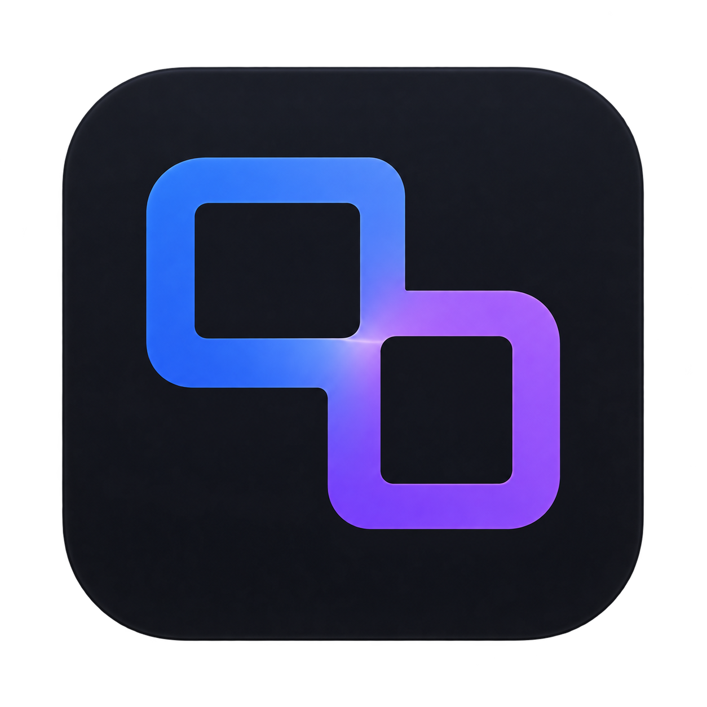
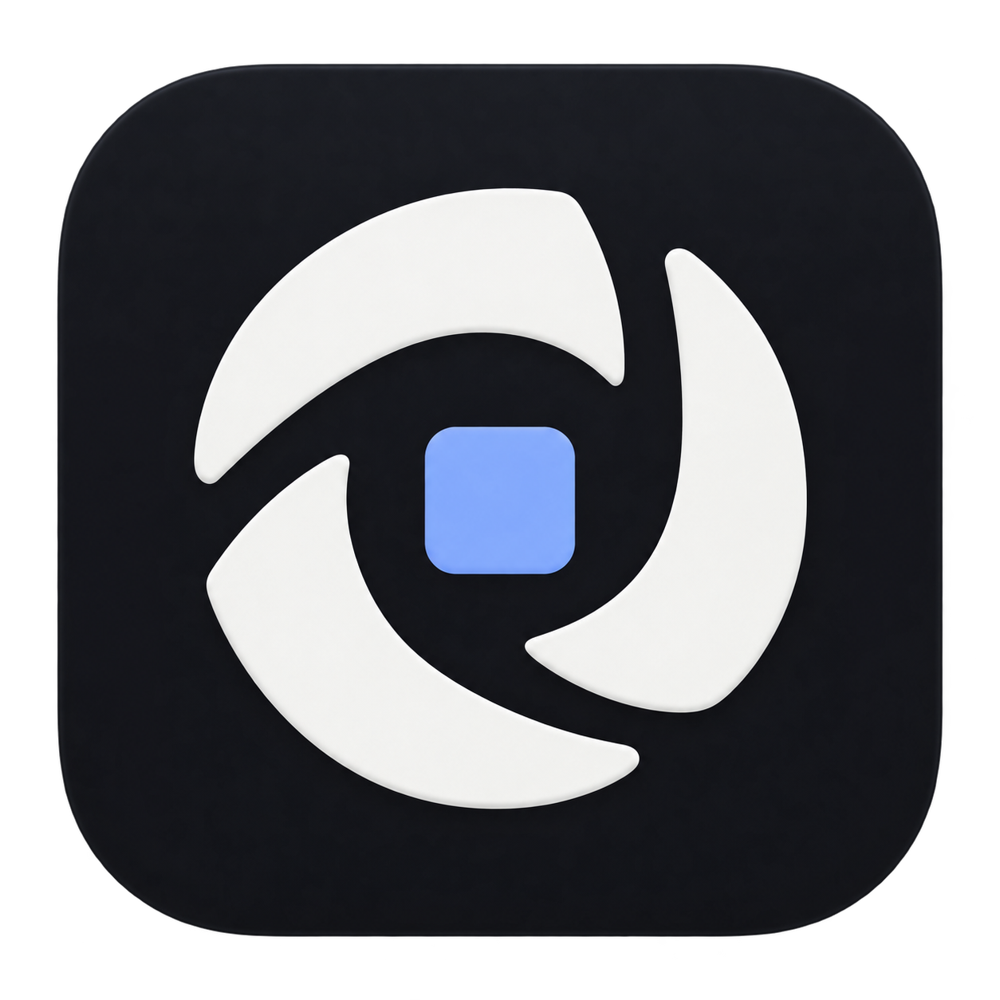

01 / TRACE
Trace Path
A continuous route that forms a T; continuity with the existing copper identity.
Download PNG ↗
16px24px32px
16px24px32px
Trace / Identity exploration / 28 September 2026
Five app-logo directions for understanding a change from motivation and planning through implementation and review.
A continuous route that forms a T; continuity with the existing copper identity.
Download PNG ↗
Two related states connected across a change: current evidence and proposed behavior.
Download PNG ↗
Move between the whole system and the precise evidence at its center.
Download PNG ↗Selected identity: a proposed structure becomes a concrete implementation.
Download concept PNG ↗Connect the problem, plan, and verification in one compact mark.
Download PNG ↗